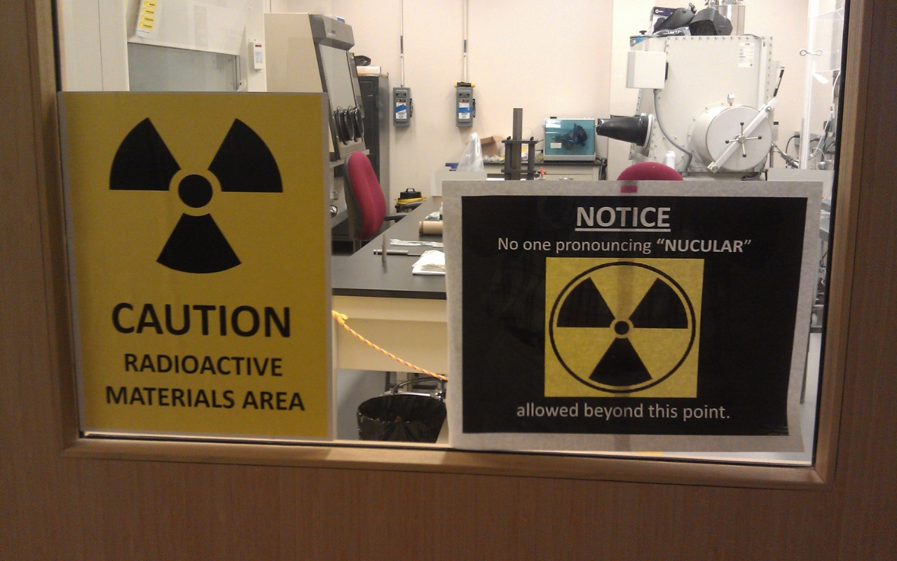
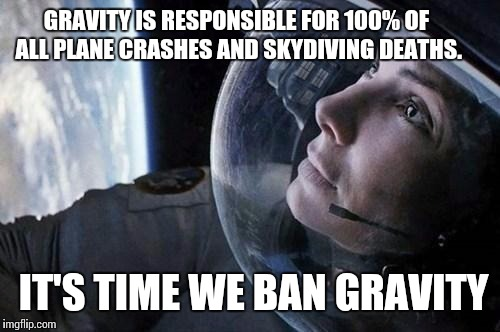
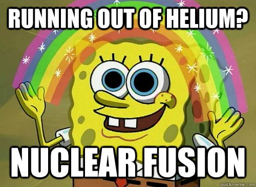

504440E
Assignment Archive
Stage 1 Physics Assignments
Radiotracers - Xenon-133

Stage 1 Physics | Science as a Human Endevour | May 2018
Proving Gravity Practical Report

Stage 1 Physics | Practical Report | June 2018
Ohmic Resistor Practical Report

Stage 1 Physics | Practical Report | October 2018
How is the Research Conducted by the NSTX-U Contributing to the Development In Nuclear Fusion Technology in ITER?

Stage 1 Physics | Science as a Human Endevour | November 2018